00이 매뉴얼에 대하여
건축물 해체공사 감리대가 산출기는 주감리원과 보조감리원의 기술등급·투입 일수를 넣으면 실비정액가산방식(직접인건비 + 직접경비 + 제경비 + 기술료)으로 해체공사 감리비용을 계산하고, A4 산출서로 출력하는 웹 계산도구입니다. 발주 부서 담당자와 건축사사무소 실무자가 화면 순서대로 따라 하며 감리비를 산출할 수 있도록 작성했습니다.
| 항목 | 내용 |
|---|---|
| 대상 프로그램 | 건축물 해체공사 감리대가 산출기 MANMIN Ver-5.0 — 탭 막대 「📘 매뉴얼」 버튼으로 이 문서가 열립니다 |
| 접속 주소 | manminkim-eng.github.io/demolition-calc |
| 매뉴얼 판 | Ver-5.0 (화면 표기와 같은 판 번호, 초판) · 2026-10-11 · 작성 김만민 건축사(㈜대성건축사사무소) |
| 내려받기 | PDF(A4) · 해체공사 감리대가 산출기 열기 |
| 예제 | 본문 그림은 예제 A(만민 건축사 사옥 해체공사 · 주감리 기술사/건축사 5일 · 보조감리 미투입 · 제경비 110% · 기술료 20%)로 캡처 — 프로그램을 처음 열었을 때의 초기값과 같습니다. 합계 6,475,000원(VAT 포함). 입력값은 부록 A1 |
| 근거 기준 | 건축물관리법(2025.6.4. 시행) 제30조·제31조 · 건축물관리법 시행령(2026.9.22. 시행) 제23조의2 · 건축물관리법 시행규칙(2025.6.2. 시행) 제13조제4항 · 「건축물 해체계획서의 작성 및 감리업무 등에 관한 기준」 국토교통부고시 제2022-446호(2022.8.4. 시행) 제23조·별표 2 — 4장 조문은 법령 원문(LawMCP, 2026-10-11 조회)으로 대조 |
| 읽는 순서 | 처음이면 1장 → 2장(따라하기) → 필요할 때 3장(화면별 상세). 감리비 산출·계약 전에는 4장(기술기준)·5장(작업 방법) |
01한눈에 보기
설치 없이 브라우저에서 바로 실행되는 단일 페이지 앱(PWA)입니다. 입력은 내 PC 브라우저 안에서만 처리되며 서버로 전송되지 않습니다.
무엇을 계산하나
주감리원·보조감리원의 직접인건비, 제경비, 기술료, 공급가액, 부가가치세, 합계
자동으로 정해지는 값
등급별 노임단가, 요율별 제경비·기술료, 천원 미만 버림
근거
건축물관리법 시행규칙 제13조제4항제2호 · 고시 제23조제4항 (국토교통부고시 제2022-446호(2022.8.4. 시행))
출력
A4 해체공사 감리 대가 산출서 — 항목별 금액과 산출 근거(인쇄·PDF·JPG)
1-1. 화면 구성
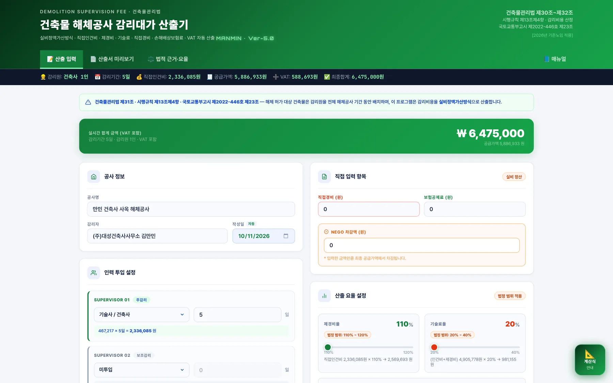
1234567- 1작업 탭: 산출 입력 · 산출서 미리보기 · 법적 근거·요율 · 매뉴얼
- 2요약 스트립: 감리원·감리기간·직접인건비·공급가액·VAT·최종합계가 입력할 때마다 갱신
- 3근거 안내: 건축물관리법 제31조 · 시행규칙 제13조제4항 · 고시 제23조
- 4합계 배너: 실시간 합계 금액과 공급가액
- 5공사 정보: 공사명·감리자·작성일 — A4 산출서 표제로 들어감
- 6인력 투입 설정: 주감리·보조감리의 기술등급과 투입 일수
- 7오른쪽 버튼: 「계산식 안내」 창 열기
| 탭 | 하는 일 | 본문 |
|---|---|---|
| 📝 산출 입력 | 공사 정보, 인력 투입, 실비·NEGO, 요율 입력과 실시간 결과 | 3-1~3-5 |
| 📄 산출서 미리보기 | A4 해체공사 감리 대가 산출서 미리보기 · 인쇄/PDF · JPG 저장 | 3-6~3-7 |
| ⚖️ 법적 근거·요율 | 법적 근거 · 노임단가 · 실시간 산출 현황 · 감리원 배치 기준 · VAT 과세표준 · 점검 3원칙 | 3-8 |
| 📘 매뉴얼 | 이 매뉴얼을 새 창으로 엽니다(인터넷 연결 필요) | 1-3 |
1-2. 작업 탭·근거 표시
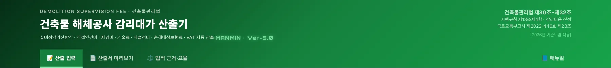
12345- 1산출 입력
- 2산출서 미리보기
- 3법적 근거·요율
- 4📘 매뉴얼 — 이 매뉴얼을 새 창으로(탭 막대 오른쪽 끝)
- 5근거 법령·고시 표시
헤더 오른쪽에는 근거 법령과 고시 번호가 적혀 있습니다. 법령·고시나 노임단가가 바뀌면 이 표시와 4장 내용을 함께 확인하십시오.
1-3. 설치·보관·매뉴얼
| 항목 | 내용 |
|---|---|
| 설치(선택) | 크롬·엣지 주소창의 설치 아이콘 또는 화면 아래 설치 안내를 누르면 홈 화면·바탕화면에 앱으로 설치됩니다. 아이폰은 사파리 공유 버튼 → 「홈 화면에 추가」 |
| 오프라인 | 한 번 연 뒤에는 인터넷이 끊겨도 계산·출력이 됩니다. 매뉴얼은 인터넷에 연결되어 있을 때만 열립니다 |
| 입력값 보관 | 입력값은 저장되지 않습니다. 창을 닫거나 새로 고치면 초기값으로 돌아가므로, 결과는 산출서(PDF·JPG)로 남기십시오 |
| 업데이트 | 새 버전이 올라오면 다음 접속 때 자동으로 바뀝니다. 화면이 예전 그대로면 새로 고침(Ctrl+F5) |
023분 따라하기
예제 A(초기값)로 6단계를 따라 하면 합계 6,475,000원이 나옵니다. 계산 버튼은 없습니다. 값을 바꾸는 즉시 결과가 바뀝니다.
- 공사 정보 입력「공사 정보」 카드에 공사명·감리자를 적고 작성일을 고릅니다. 이 값이 산출서 표제와 서명란에 들어갑니다(3-1).
- 주감리 등급·일수「인력 투입 설정」의 SUPERVISOR 01에서 기술등급과 투입 일수를 넣습니다. 예제는 기술사/건축사 5일 — 2,336,085원(3-2).
- 보조감리SUPERVISOR 02는 「미투입」으로 두거나, 2명을 배치하는 현장이면 등급과 일수를 넣습니다. 예제는 미투입(3-2).
- 요율·실비 → 합계 확인「산출 요율 설정」에서 제경비율(110~120%)과 기술료율(20~40%)을 정하고, 「직접 입력 항목」에 직접경비·보험공제료·NEGO 차감액을 넣습니다. 예제는 110% · 20% · 실비 0원. 합계 배너에 ₩ 6,475,000, 공급가액 5,886,933원이 표시됩니다(3-3~3-5).
- 산출서 확인「📄 산출서 미리보기」 탭에서 항목별 금액과 산출 근거를 확인합니다(3-7).
- 인쇄·저장「인쇄 / PDF 저장」 또는 「JPG 저장」으로 산출서를 남깁니다(3-6).
| 항목 | 예제 A 계산 | 금액(원) |
|---|---|---|
| 1. 직접인건비 | 467,217 × 5일 | 2,336,085 |
| 2. 제경비 | 직접인건비 × 110% | 2,569,693 |
| 3. 기술료 | (직접인건비 + 제경비) × 20% | 981,155 |
| 4. 직접경비 · 5. 손해배상보험료 · 6. NEGO | 예제는 모두 0 | 0 |
| 산출 합계(공급가액) | 1 + 2 + 3 + 4 + 5 − 6 | 5,886,933 |
| 7. 부가가치세 | 공급가액 × 10% | 588,693 |
| 최종 합계 | 천원 미만 버림 | 6,475,000 |
03화면별 기능 상세
산출 입력 탭의 카드 순서와 나머지 탭 순서로 설명합니다.
3-1. 공사 정보
- 1공사명 — 산출서 「공 사 명」
- 2감리자 — 산출서 「감 리 자」와 서명란
- 3작성일 — 산출서 날짜(처음 열 때 오늘 날짜)
세 칸 모두 금액에는 영향을 주지 않고 산출서에만 들어갑니다.
3-2. 인력 투입 설정
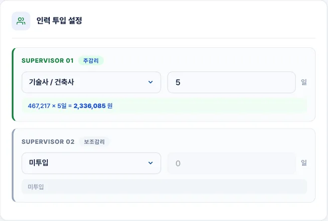
12345- 1주감리 기술등급 — 기술사/건축사 · 특급 · 고급 · 중급 · 초급기술자
- 2투입 일수(일)
- 3주감리 인건비 — 노임단가 × 일수
- 4보조감리 — 「미투입」 포함 6가지
- 5보조감리 인건비 — 미투입이면 「미투입」
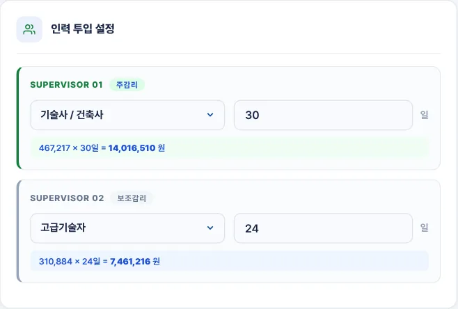
1234- 1주감리 기술사/건축사 30일
- 2보조감리 고급기술자
- 3보조감리 24일
- 4보조감리 인건비 — 310,884 × 24일
- 투입 일수는 「개월」이 아니라 일로 넣습니다. 사전 검토, 실제 해체공사, 완료 보고에 들어가는 일수를 빠뜨리지 않도록 합산하며, 일수는 감리계약으로 정합니다.
- 보조감리를 「미투입」으로 두면 일수 칸이 잠기고 금액은 0원입니다.
- 해체 허가 대상으로서 연면적 3천제곱미터 이상이면 감리원 2명 이상 배치가 원칙입니다(4-3). 화면의 「주감리」「보조감리」는 두 사람을 구분하는 이름이며 법령 용어는 아닙니다.
- 요약 스트립과 산출서의 「감리기간」은 두 사람의 투입 일수 가운데 큰 값입니다.
3-3. 산출 요율 설정
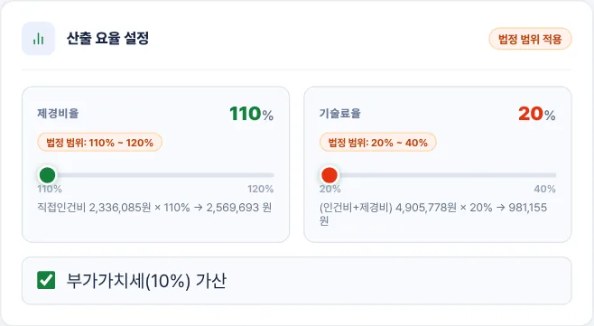
12345- 1제경비율 슬라이더 — 110~120%, 1% 단위
- 2제경비 계산 — 직접인건비 × 제경비율
- 3기술료율 슬라이더 — 20~40%, 1% 단위
- 4기술료 계산 — (직접인건비 + 제경비) × 기술료율
- 5부가가치세(10%) 가산 — 끄면 공급가액이 합계가 됨
- 범위는 고시 제23조제4항제3호(제경비: 직접인건비의 110~120%)와 제4호(기술료: 직접인건비에 제경비를 합한 금액의 20~40%)에 맞춰 있습니다.
- 제경비와 기술료는 각각 원 미만을 버립니다.
3-4. 직접 입력 항목
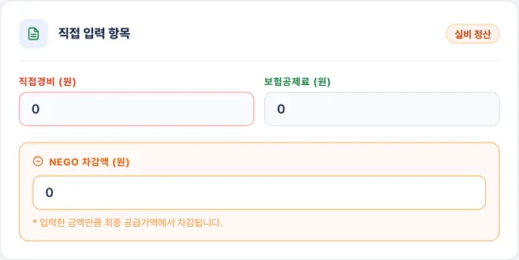
123- 1직접경비(원) — 실제 소요비용
- 2보험공제료(원) — 손해배상 보험·공제 가입 비용
- 3NEGO 차감액(원) — 공급가액에서 빼는 협의 차감액
| 칸 | 무엇을 넣나 | 계산 |
|---|---|---|
| 직접경비 | 해체공사 감리업무에 필요한 숙박비, 제출도서의 인쇄 및 복사비, 사무공간 임대비(별도의 사무실을 제공받는 경우는 제외) 등의 실제 소요비용(고시 제23조제4항제2호) | 공급가액에 더함 |
| 보험공제료 | 손해배상책임 보험·공제 가입 비용. 산출서에는 「5. 손해배상보험료」로 표시(4-8) | 공급가액에 더함 |
| NEGO 차감액 | 계약 협의로 줄이는 금액. 근거 규정이 있는 항목이 아니라 당사자 협의 결과를 반영하는 칸 | 공급가액에서 뺌 |
세 칸 모두 숫자만 넣으면 천 단위 쉼표가 자동으로 붙습니다. 직접경비와 보험공제료에는 제경비·기술료가 붙지 않습니다.
3-5. 요약 스트립·합계 배너
- 1요약 스트립 — 어느 탭에서나 보임
- 2근거 안내 — 법 제31조 · 시행규칙 제13조제4항 · 고시 제23조
- 3감리기간(투입 일수 중 큰 값) · 감리원 수 · VAT 포함 여부
- 4최종 합계(천원 미만 버림)
- 5공급가액(VAT 제외)
3-6. 산출서 미리보기·출력
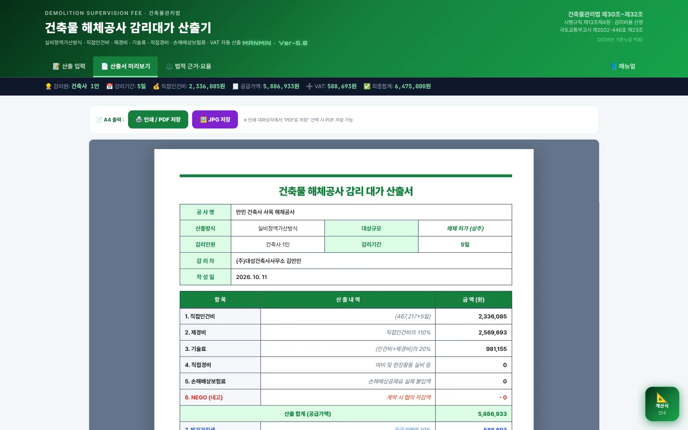
123- 1「인쇄 / PDF 저장」 — 인쇄 창에서 대상 프린터를 「PDF로 저장」으로 고르면 PDF
- 2「JPG 저장」 — A4 한 장 그림 파일
- 3A4 해체공사 감리 대가 산출서 미리보기
산출서는 A4 1매입니다. 미리보기는 화면 폭에 맞춰 줄어들 뿐 인쇄 결과는 같습니다.
3-7. A4 산출서 구성
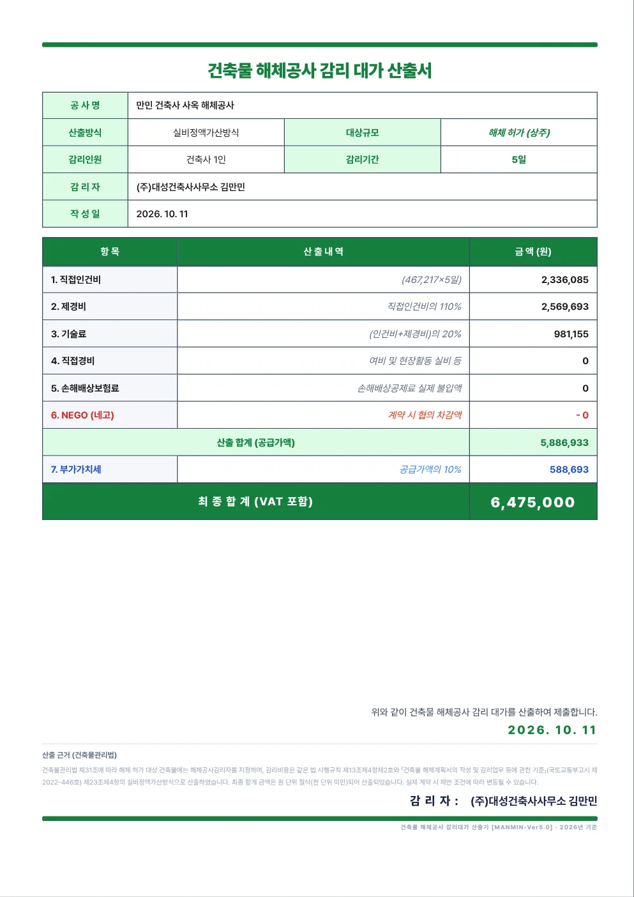
12345678- 1공사 개요 — 공사명·산출방식·대상규모·감리인원·감리기간·감리자·작성일
- 21. 직접인건비 — 노임단가 × 일수
- 32. 제경비
- 43. 기술료
- 5산출 합계(공급가액)
- 6최종 합계(VAT 포함)
- 7산출 근거 — 법 제31조 · 시행규칙 제13조제4항제2호 · 고시 제23조제4항
- 8감리자 서명란
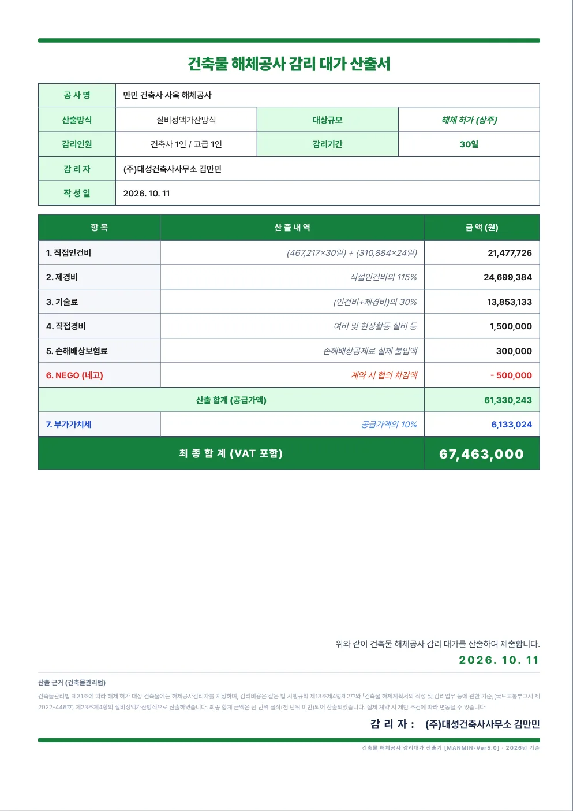
- 「산출방식」은 실비정액가산방식, 「대상규모」는 「해체 허가 (상주)」로 고정 표시됩니다. 신고 대상 현장의 산출서로 쓸 때는 이 표기가 맞는지 확인하십시오.
- 예제 B는 2명을 배치하고 실비와 협의 차감액이 있는 경우입니다. 입력값과 계산은 5-3.
3-8. 법적 근거·요율 탭
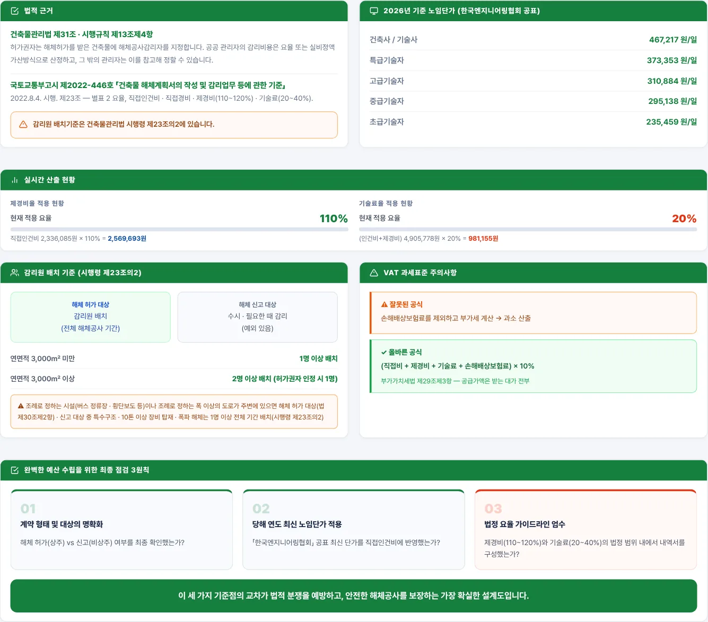
123456- 1법적 근거 — 법 제31조 · 시행규칙 제13조제4항 · 고시 제2022-446호
- 22026년 기준 노임단가 — 등급별 1일 단가
- 3실시간 산출 현황 — 지금 적용 중인 제경비율·기술료율과 금액
- 4감리원 배치 기준 — 시행령 제23조의2
- 5VAT 과세표준 — 손해배상보험료를 공급가액에 포함
- 6최종 점검 3원칙
3-9. 계산식 안내 창
오른쪽 「계산식 안내」 버튼을 누르면 「해체감리비 산출 가이드」 창이 열립니다. 탭 5개로 이용방법, 산정 방식, 계산식 단계, 배치 기준, 주의사항을 볼 수 있습니다. 닫을 때는 ✕ 또는 「닫기」를 누릅니다.
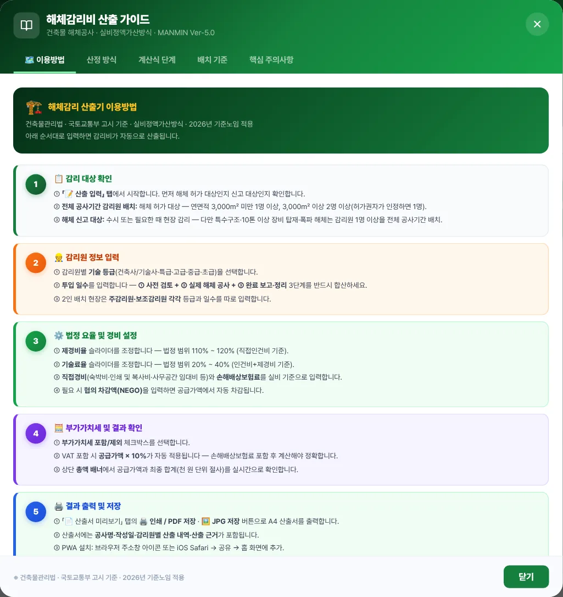
12345- 1이용방법 — 5단계 사용 순서
- 2산정 방식 — 요율 방식과 실비정액가산방식
- 3계산식 단계 — STEP 1~6
- 4배치 기준 — 시행령 제23조의2
- 5핵심 주의사항 — 부가가치세 · 추가업무비용
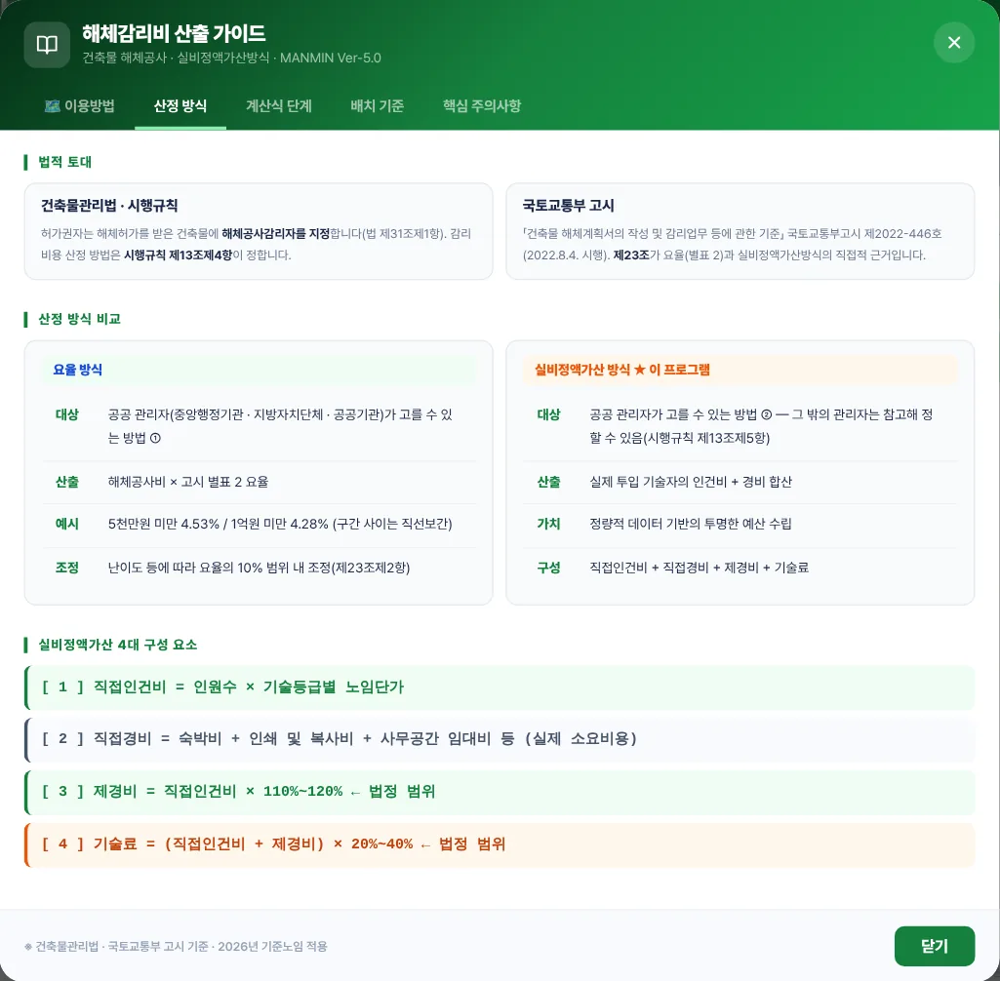
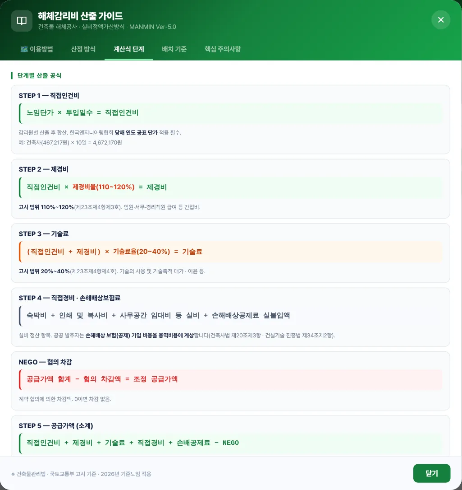
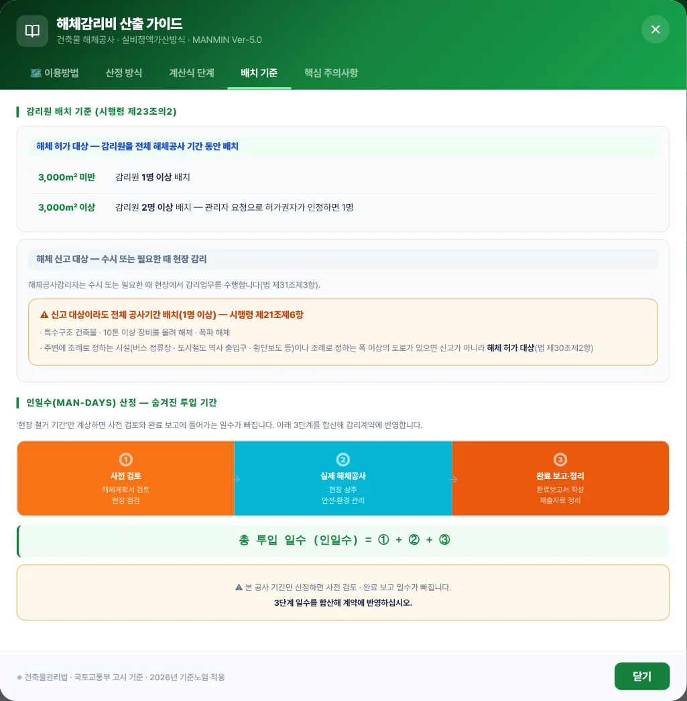
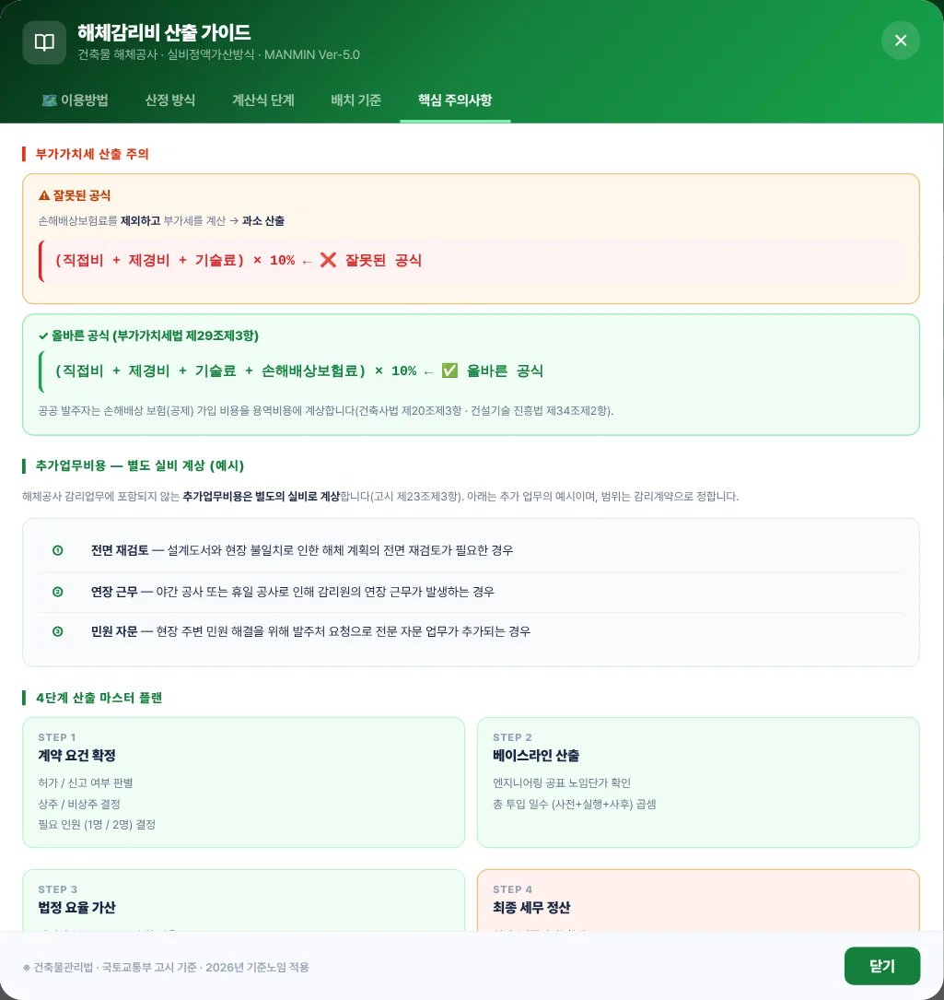
3-10. 모바일
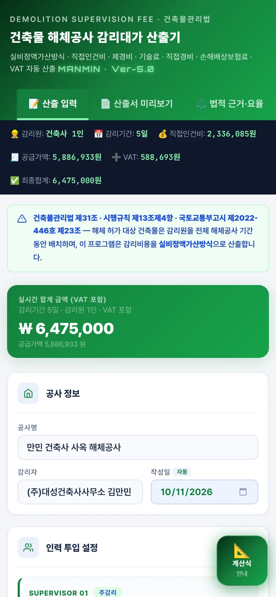
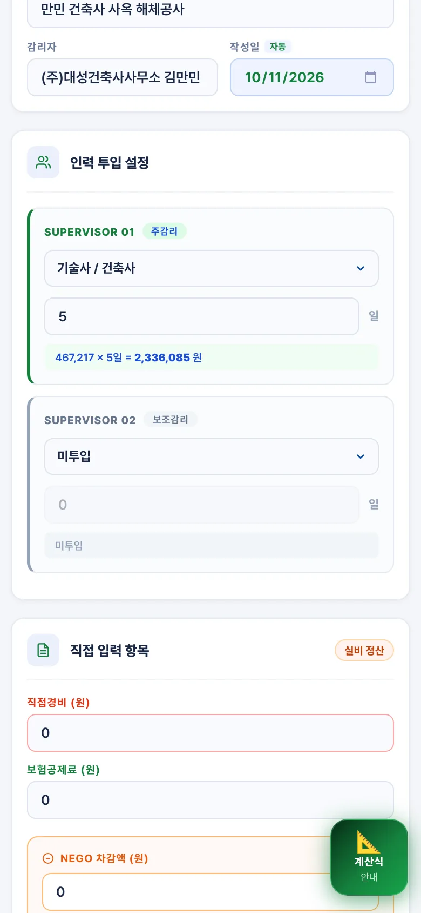
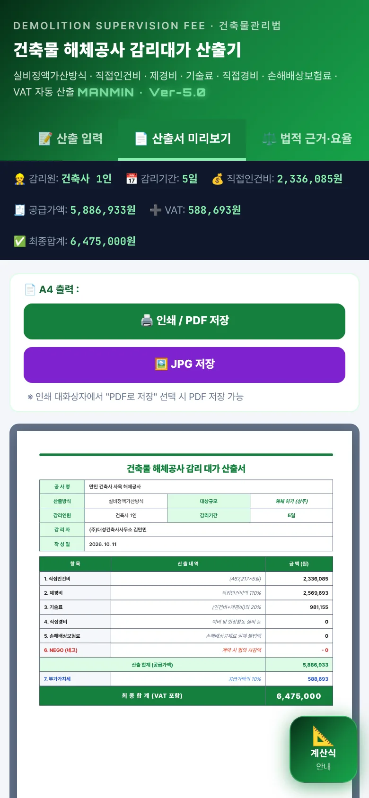
- 휴대폰에서는 카드가 한 줄로 쌓입니다. 탭 막대는 좌우로 밀 수 있으며, 「📘 매뉴얼」은 오른쪽 끝에 있습니다.
- 산출서는 화면 폭에 맞춰 축소되어 보이고, 저장한 PDF·JPG는 A4 크기 그대로입니다.
04기술기준 해설
조문은 법령 원문(LawMCP, 2026-10-11 조회)을 옮긴 것입니다.
4-1. 해체 허가와 신고
| 근거 | 내용 |
|---|---|
| 제30조제1항 본문 | 관리자가 건축물을 해체하려는 경우에는 특별자치시장·특별자치도지사 또는 시장·군수·구청장(허가권자)의 허가를 받아야 한다 |
| 제30조제1항 단서 — 신고 | 다음의 경우 신고를 하면 허가를 받은 것으로 본다 — ① 주요구조부의 해체를 수반하지 아니하고 건축물의 일부를 해체하는 경우 ② 연면적 500제곱미터 미만 · 높이 12미터 미만 · 지상층과 지하층을 포함하여 3개 층 이하에 모두 해당하는 건축물의 전체를 해체하는 경우 ③ 그 밖에 대통령령으로 정하는 건축물 |
| 제30조제2항 — 신고 대상이라도 허가 | ① 해당 건축물 주변의 일정 반경 내에 버스 정류장, 도시철도 역사 출입구, 횡단보도 등 해당 지방자치단체의 조례로 정하는 시설이 있는 경우 ② 해당 건축물의 외벽으로부터 건축물의 높이에 해당하는 범위 내에 해당 지방자치단체의 조례로 정하는 폭 이상의 도로가 있는 경우 ③ 그 밖에 주변 여건을 고려하여 조례로 정하는 경우 |
| 시행령 제21조제1항 | 신고 대상 추가 — 건축법 제14조제1항제1호 또는 제3호에 따른 건축물, 관리지역·농림지역·자연환경보전지역에 있는 높이 12미터 미만인 건축물, 그 밖에 시·군·구 조례로 정하는 건축물 |
근거: 건축물관리법(2025.6.4. 시행) · 건축물관리법 시행령(2026.9.22. 시행). 주변 시설의 종류·반경과 도로의 폭은 지방자치단체 조례로 정하므로, 대상지의 조례를 확인합니다.
4-2. 해체공사감리자 지정
| 근거 | 내용 |
|---|---|
| 법 제31조제1항 | 허가권자는 건축물 해체허가를 받은 건축물에 대한 해체작업의 안전한 관리를 위하여 건축사법 또는 건설기술 진흥법에 따른 감리자격이 있는 자 중 해체공사감리 업무에 관한 교육을 이수한 자를 해체공사감리자로 지정하여 해체공사감리를 하게 하여야 한다 |
| 시행령 제22조제2항 | 허가권자가 명부에서 해체공사감리자를 지정해야 하는 건축물 — ① 해체허가 대상인 건축물 ② 해체신고 대상인 건축물로서 제21조제6항 각 호의 건축물 또는 허가권자가 해체작업의 안전한 관리를 위하여 필요하다고 인정하는 건축물 |
| 시행규칙 제13조제3항 | 관리자는 지정통지서를 받으면 해당 해체공사감리자와 감리계약을 체결해야 한다 |
| 법 제31조제5항 | 관리자와 해체공사감리자 간의 책임 내용 및 범위는 이 법에서 규정한 것 외에는 당사자 간의 계약으로 정한다 |
4-3. 감리원 배치 기준
법 제31조제3항 — 해체공사감리자는 수시 또는 필요한 때 해체공사의 현장에서 감리업무를 수행합니다. 다만 대통령령으로 정하는 건축물의 해체공사는 자격 또는 경력이 있는 자를 감리원으로 배치하여 전체 해체공사 기간 동안 현장에서 감리업무를 수행하게 해야 합니다.
| 구분 | 시행령 제23조의2 | 프로그램 |
|---|---|---|
| 전체 기간 배치 대상(제23조의2제1항) | ① 해체허가 대상인 건축물 ② 해체신고 대상인 건축물 중 제21조제6항 각 호에 해당하는 건축물 | — |
| 제21조제6항 각 호 | 특수구조 건축물(건축법 시행령 제2조제18호나목 또는 라목) · 건축물에 10톤 이상의 장비를 올려 해체하는 건축물 · 폭파하여 해체하는 건축물 | — |
| 허가 대상 · 연면적 3천제곱미터 미만 | 감리원 1명 이상 | 주감리만 입력 |
| 허가 대상 · 연면적 3천제곱미터 이상 | 감리원 2명 이상. 다만 관리자가 요청하는 경우로서 허가권자가 해체공사의 난이도, 해체할 부분 및 면적 등을 고려할 때 2명 이상 배치할 필요가 없다고 인정하면 1명 | 주감리 + 보조감리 |
| 신고 대상 중 제21조제6항 건축물 | 1명 이상의 감리원 | 주감리만 입력 |
| 필수확인점 | 필수확인점에 다다른 경우 다음 단계의 해체공정을 진행하기 전까지 건축사 또는 건설사업관리 특급기술인 1명 이상을 배치 | 등급 선택에 반영 |
4-4. 감리비용 산정 방법
| 근거 | 내용 |
|---|---|
| 시행규칙 제13조제4항 | 관리자가 중앙행정기관의 장, 지방자치단체의 장 및 공공기관의 장인 경우 해체공사 감리비용은 다음의 어느 하나에 해당하는 방법으로 산정 — ① 해체공사비에 국토교통부장관이 정하여 고시하는 요율을 곱하여 산정하는 방법 ② 엔지니어링사업의 대가 기준 중 실비정액가산방식을 국토교통부장관이 정하여 고시하는 방법에 따라 적용하여 산정하는 방법 |
| 시행규칙 제13조제5항 | 제4항에 따른 자가 아닌 관리자의 건축물 해체공사 감리비용은 같은 항의 감리비용을 참고하여 정할 수 있다 |
근거: 건축물관리법 시행규칙(2025.6.2. 시행). 공공 관리자는 두 방법 가운데 하나로 산정하고, 그 밖의 관리자는 이를 참고합니다. 감리 방식(상주·비상주)에 따라 산정 방법을 나누는 규정은 없습니다. 이 프로그램은 ② 실비정액가산방식을 계산합니다.
4-5. 요율 방식 — 별표 2
고시 제23조제1항 — 요율은 별표 2에 따른 공공발주사업의 해체공사비에 대한 요율을 말합니다. 제2항 — 해체공사의 난이도 등에 따라 요율의 10% 범위 내에서 조정할 수 있습니다. 제3항 — 요율방식을 적용할 경우라도 해체공사 업무에 포함되지 않는 추가업무비용은 별도의 실비로 계상합니다.
| 해체공사비 | 요율(%) |
|---|---|
| 5천만원 미만 | 4.53 |
| 5천만원 이상 1억원 미만 | 4.28 |
| 1억원 이상 2억원 미만 | 3.39 |
| 2억원 이상 3억원 미만 | 3.09 |
| 3억원 이상 5억원 미만 | 2.84 |
| 5억원 이상 10억원 미만 | 2.49 |
| 10억원 이상 20억원 미만 | 2.30 |
| 20억원 이상 30억원 미만 | 2.22 |
| 30억원 이상 50억원 미만 | 2.18 |
| 50억원 이상 100억원 미만 | 2.12 |
| 100억원 이상 200억원 미만 | 2.06 |
| 200억원 이상 300억원 미만 | 2.03 |
| 300억원 이상 500억원 미만 | 2.00 |
| 500억원 이상 1000억원 미만 | 1.95 |
| 1000억원 이상 2000억원 미만 | 1.92 |
| 2000억원 이상 3000억원 미만 | 1.88 |
별표 2 비고 — 해체공사비가 요율표의 각 단위 중간에 있을 때의 요율은 직선보간법으로 산정합니다. 이 표는 참고용이며 프로그램은 요율 방식을 계산하지 않습니다.
4-6. 실비정액가산방식
| 고시 제23조제4항 | 내용 | 프로그램 |
|---|---|---|
| 직접인건비(제1호) | 해당 건축물 해체공사 감리업무에 종사하는 기술자의 인건비로서 투입된 인원수에 엔지니어링기술자의 기술등급별 노임단가를 곱하여 계산한다. (건축사 및 건축사보의 노임단가는 기술사 및 기술자의 노임단가에 준한다) | 등급별 단가 × 투입 일수 |
| 직접경비(제2호) | 해당 건축물 해체공사 감리업무에 필요한 숙박비, 제출도서의 인쇄 및 복사비, 사무공간 임대비(별도의 사무실을 제공받는 경우는 제외한다) 등으로서 실제 소요비용으로 한다 | 「직접경비」 칸 |
| 제경비(제3호) | 직접비(직접인건비 및 직접경비를 말한다)에 포함되지 아니하는 비용으로 임원, 서무, 경리직원의 급여, 소프트웨어 라이센스비 등을 포함한 것으로서 직접인건비의 110~120%로 한다 | 제경비율 슬라이더 |
| 기술료(제4호) | 건축물 해체공사 감리자가 개발·보유한 기술의 사용 및 기술축적을 위한 대가로서 조사연구비, 기술개발비, 이윤 등을 포함하며 직접인건비에 제경비를 합한 금액의 20~40%로 한다 | 기술료율 슬라이더 |
근거: 「건축물 해체계획서의 작성 및 감리업무 등에 관한 기준」 국토교통부고시 제2022-446호(2022.8.4. 시행).
4-7. 노임단가
| 기술등급 | 노임단가(원/일) |
|---|---|
| 기술사 / 건축사 | 467,217 |
| 특급기술자 | 373,353 |
| 고급기술자 | 310,884 |
| 중급기술자 | 295,138 |
| 초급기술자 | 235,459 |
- 프로그램에 든 단가는 한국엔지니어링협회가 공표한 엔지니어링기술자 노임단가 가운데 건설 부문 · 2026.1.1. 적용 값입니다.
- 노임단가는 해마다 새로 공표됩니다. 산출 전에 「법적 근거·요율」 탭의 연도 표기를 확인하십시오.
4-8. 손해배상보험료·부가가치세
| 근거 | 내용 |
|---|---|
| 건축사법 제20조제3항 | 건축사는 손해배상책임을 보장하기 위하여 보험 또는 공제에 가입하여야 한다. 이 경우 제19조의3제1항 각 호의 어느 하나에 해당하는 자(국가·지방자치단체·공공기관 등)는 보험 또는 공제 가입에 따른 비용을 용역비용에 계상하여야 한다 |
| 건설기술 진흥법 제34조제2항 | 대통령령으로 정하는 건설엔지니어링사업자는 보험 또는 공제에 가입하여야 한다. 이 경우 발주청은 보험 또는 공제 가입에 따른 비용을 건설엔지니어링 비용에 계상하여야 한다 |
| 부가가치세법 제29조제3항 | 공급가액은 대금, 요금, 수수료, 그 밖에 어떤 명목이든 상관없이 재화 또는 용역을 공급받는 자로부터 받는 금전적 가치 있는 모든 것을 포함하되, 부가가치세는 포함하지 아니한다 |
프로그램은 손해배상보험료를 공급가액에 넣은 뒤 부가가치세(공급가액 × 10%)를 계산합니다. 보험·공제 비용의 계상 의무는 위 조문의 공공 발주자에 대한 것이므로, 민간 계약에서는 계약으로 정합니다.
4-9. 프로그램의 계산 순서
4-10. 프로그램이 다루지 않는 것
| 항목 | 내용 | 프로그램 |
|---|---|---|
| 요율 방식 | 해체공사비 × 별표 2 요율(시행규칙 제13조제4항제1호) | 계산 안 함 — 4-5 표로 직접 계산 |
| 허가·신고 대상 판정 | 법 제30조 · 시행령 제21조 · 지방자치단체 조례 | 판정 안 함 |
| 감리원 수 · 자격 | 시행령 제23조의2 | 판정 안 함 |
| 추가업무비용 | 해체공사 업무에 포함되지 않는 추가업무비용은 별도의 실비로 계상(고시 제23조제3항) | 직접경비 칸에 넣거나 따로 계산 |
| 감리원 3명 이상 | 입력 칸은 주감리·보조감리 2명 | 따로 계산 |
| 산출서 「대상규모」 | 「해체 허가 (상주)」 고정 표시 | 바꿀 수 없음 |
4-11. 적용 시점
| 기준 | 확인한 판 |
|---|---|
| 건축물관리법 | 2025.6.4. 시행(2024.12.3. 공포) — 제30조·제31조·제32조 |
| 건축물관리법 시행령 | 2026.9.22. 시행 — 제21조·제22조·제23조의2 |
| 건축물관리법 시행규칙 | 2025.6.2. 시행 — 제13조 |
| 건축물 해체계획서의 작성 및 감리업무 등에 관한 기준 | 국토교통부고시 제2022-446호 — 2022.8.4. 시행 |
| 건축사법 · 건설기술 진흥법 · 부가가치세법 | 2026.9.18. 시행 · 2025.10.1. 시행 · 2026.1.2. 시행 |
| 엔지니어링 노임단가 | 한국엔지니어링협회 공표 · 2026.1.1. 적용(건설 부문) |
05실무 작업 방법
해체공사 감리계약 전 감리비를 산출할 때의 순서입니다.
5-1. 단계별 절차
| 단계 | 할 일 | 본문 |
|---|---|---|
| 1. 대상 확인 | 허가 대상인지 신고 대상인지, 주변 시설·도로에 관한 조례 해당 여부, 특수구조·10톤 이상 장비·폭파 해체 여부 확인 | 4-1 · 4-3 |
| 2. 감리원 수 | 연면적 3천제곱미터를 기준으로 1명 또는 2명 이상, 필수확인점 배치 자격 확인 | 4-3 |
| 3. 투입 일수 | 해체계획서의 예정공정표로 사전 검토 · 해체공사 · 완료 보고 일수를 합산 | 3-2 |
| 4. 요율·실비 | 제경비율·기술료율 협의, 직접경비·보험공제료 견적 반영 | 3-3 · 3-4 |
| 5. 산출서 출력 | 산출서 미리보기에서 금액 확인 후 PDF·JPG 저장 | 3-6 |
| 6. 감리계약 | 지정통지서를 받은 뒤 해체공사감리자와 감리계약 체결(시행규칙 제13조제3항) | 4-2 |
5-2. 제출 전 확인
| 항목 | 확인 내용 |
|---|---|
| 대상 | 허가·신고 구분과 조례 해당 여부, 전체 기간 배치 대상인지 |
| 감리원 수 | 시행령 제23조의2의 배치 기준과 같은지 |
| 투입 일수 | 예정공정표의 기간과 사전 검토·완료 보고 일수가 들어갔는지 |
| 노임단가 | 「법적 근거·요율」 탭의 적용 연도가 계약 연도와 같은지 |
| 요율 | 제경비율 110~120%, 기술료율 20~40% 범위에서 협의한 값인지 |
| 실비 | 직접경비·보험공제료에 근거 자료(견적·증권)가 있는지 |
| 부가가치세 | 가산 체크 여부가 계약 조건과 맞는지 |
| 산출서 표기 | 「대상규모 — 해체 허가 (상주)」 고정 표기가 현장과 맞는지 |
5-3. 예제 결과
예제 A(초기값)는 2장의 표와 같습니다. 예제 B는 연면적 3천제곱미터 이상으로 2명을 배치하고 실비와 협의 차감액이 있는 경우입니다.
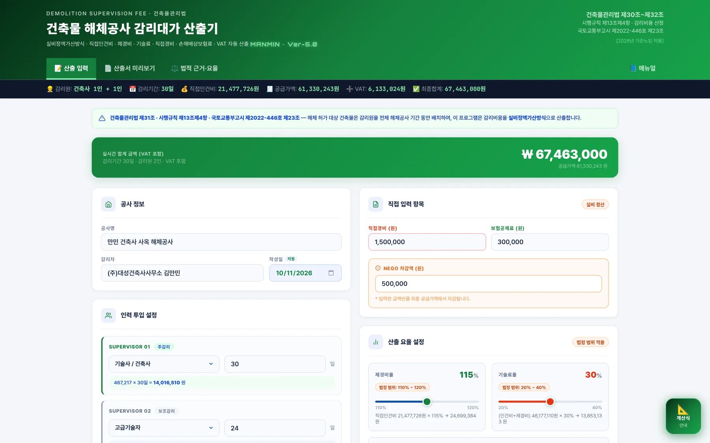
1234- 1요약 스트립 — 감리기간 30일
- 2실시간 합계 ₩ 67,463,000
- 3주감리 · 보조감리
- 4직접경비 · 보험공제료 · NEGO 차감액
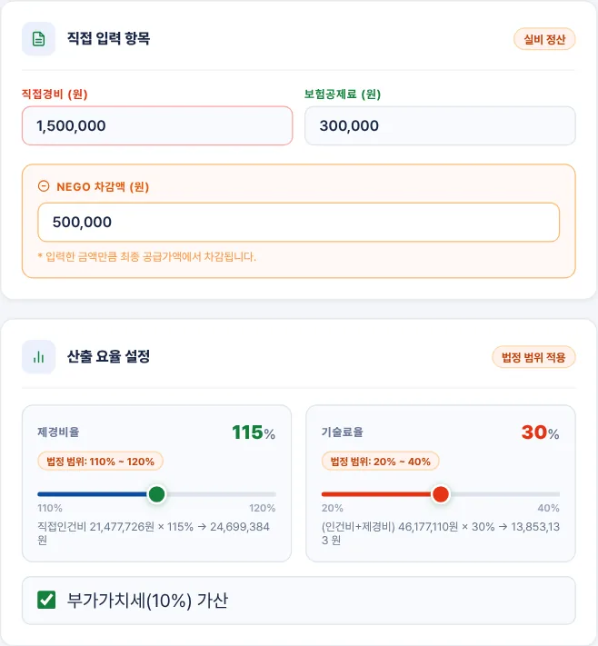
12345- 1직접경비 1,500,000원
- 2보험공제료 300,000원
- 3NEGO 차감액 500,000원
- 4제경비 115%
- 5기술료 30%
| 구분 | 기술등급 | 투입 일수 | 노임단가(원/일) | 소계(원) |
|---|---|---|---|---|
| 주감리 | 기술사/건축사 | 30 | 467,217 | 14,016,510 |
| 보조감리 | 고급기술자 | 24 | 310,884 | 7,461,216 |
| 항목 | 예제 B 계산 | 금액(원) |
|---|---|---|
| 1. 직접인건비 | 위 표의 합 | 21,477,726 |
| 2. 제경비 | 21,477,726 × 115% | 24,699,384 |
| 3. 기술료 | (21,477,726 + 24,699,384) × 30% | 13,853,133 |
| 4. 직접경비 | 실비 | 1,500,000 |
| 5. 손해배상보험료 | 실비 | 300,000 |
| 6. NEGO | 차감 | − 500,000 |
| 산출 합계(공급가액) | 1 + 2 + 3 + 4 + 5 − 6 | 61,330,243 |
| 7. 부가가치세 | 공급가액 × 10% | 6,133,024 |
| 최종 합계 | 천원 미만 버림 | 67,463,000 |
06문제 해결·FAQ
| 증상·질문 | 답 |
|---|---|
| 합계가 0원으로 나옵니다 | 주감리 투입 일수가 0이거나 비어 있는지 확인합니다. |
| 보조감리 일수를 넣을 수 없습니다 | 보조감리 등급이 「미투입」이면 일수 칸이 잠깁니다. 등급을 먼저 고릅니다. |
| 감리원이 3명입니다 | 입력 칸은 2명까지입니다. 세 번째 감리원의 인건비는 따로 계산해 직접인건비에 더한 뒤 제경비·기술료를 다시 구해야 하므로, 이 프로그램의 합계에 단순히 더하지 않습니다. |
| 공공 발주라 요율 방식으로 산정해야 합니다 | 요율 방식(해체공사비 × 별표 2 요율)은 계산하지 않습니다. 4-5의 표와 직선보간으로 직접 계산합니다. |
| 신고 대상인데 감리원을 계속 배치해야 합니까 | 특수구조 건축물, 10톤 이상 장비를 올려 해체하는 건축물, 폭파하여 해체하는 건축물이면 1명 이상을 전체 해체공사 기간 동안 배치합니다(4-3). 주변 시설·도로에 관한 조례에 해당하면 신고가 아니라 허가 대상입니다(4-1). |
| 「폭 15m 이상 도로」 기준은 어디에 있습니까 | 법령에는 도로 폭 수치가 없습니다. 건축물관리법 제30조제2항은 「지방자치단체의 조례로 정하는 폭 이상의 도로」로 정하고 있으므로 대상지 조례를 확인합니다. 예전 화면의 「15m」 표기는 v5.0.6에서 고쳤습니다. |
| 제경비율을 110% 아래로 내릴 수 없습니다 | 슬라이더 범위가 고시 제23조제4항제3호의 110~120%로 고정되어 있습니다. 협의로 줄일 금액은 NEGO 차감액에 넣습니다. |
| 보험공제료에도 부가가치세가 붙습니까 | 프로그램은 보험공제료를 공급가액에 넣은 뒤 10%를 계산합니다(4-8). 실제 과세 처리는 계약과 세무 기준으로 확인하십시오. |
| 합계의 끝자리가 000입니다 | 공급가액과 부가가치세를 더한 뒤 천원 미만을 버립니다. 버리기 전 값은 산출서의 공급가액·부가가치세 줄로 확인합니다. |
| 산출서의 「대상규모」를 바꾸고 싶습니다 | 「해체 허가 (상주)」로 고정되어 있어 바꿀 수 없습니다(4-10). |
| 입력값이 사라졌습니다 | 입력값은 저장되지 않습니다. 새로 고치거나 창을 닫으면 초기값으로 돌아갑니다. 결과는 PDF·JPG로 남기십시오. |
| JPG 저장이 되지 않습니다 | 「산출서 미리보기」 탭에서 눌러야 합니다. 그림 저장에 쓰는 라이브러리는 인터넷에서 내려받으므로, 오프라인에서 실패하면 인터넷에 연결해 한 번 연 뒤 다시 시도합니다. |
| 매뉴얼 버튼을 눌러도 열리지 않습니다 | 매뉴얼은 인터넷에 연결되어 있을 때만 열립니다. |
A부록
A1. 예제 입력값
| 항목 | 예제 A(초기값) | 예제 B |
|---|---|---|
| 공사명 / 감리자 | 만민 건축사 사옥 해체공사 / (주)대성건축사사무소 김만민 | 같음 |
| 작성일 | 2026-10-11 | 같음 |
| 주감리 | 기술사/건축사 · 5일 | 기술사/건축사 · 30일 |
| 보조감리 | 미투입 | 고급기술자 · 24일 |
| 제경비율 / 기술료율 | 110% / 20% | 115% / 30% |
| 직접경비 / 보험공제료 / NEGO | 0 / 0 / 0 | 1,500,000 / 300,000 / 500,000 |
| 부가가치세 가산 | 체크 | 체크 |
| 공급가액 | 5,886,933원 | 61,330,243원 |
| 합계(VAT 포함) | 6,475,000원 | 67,463,000원 |
A2. 버전 변경 내역
| 버전 | 내용 |
|---|---|
| Ver-5.0 · v5.0.6 (2026-10-11) | 사용자 매뉴얼 연결 — 탭 막대 「📘 매뉴얼」, 매뉴얼 웹·PDF 공개 · 근거 표기 정정(감리원 배치 기준 시행령 제23조의2, 조례로 정하는 시설·도로는 해체 허가 대상(법 제30조제2항), 감리비용 산정 방법 시행규칙 제13조제4항·제5항, 고시 번호 제2022-446호, 손해배상보험료 근거, 직접경비 범위, 부가가치세 근거) · 이용방법의 탭 이름 정정 · 금액 계산을 정수 연산으로 변경(일부 입력에서 1원·1,000원 적게 표시되던 문제) |
| Ver-5.0 · v5.0.0~v5.0.5 (2026-09) | 디자인 통일(헤더·탭 막대·요약 스트립), A4 산출서, JPG 저장, 오프라인 캐시 개선 |
A3. 용어
| 용어 | 뜻 |
|---|---|
| 관리자 | 관계 법령에 따라 해당 건축물의 관리자로 규정된 자 또는 해당 건축물의 소유자. 소유자와의 관리계약 등에 따라 건축물의 관리책임을 진 자는 관리자로 본다(법 제2조제3호) |
| 해체 | 건축물을 건축·대수선·리모델링하거나 멸실시키기 위하여 건축물 전체 또는 일부를 파괴하거나 절단하여 제거하는 것(법 제2조제7호) |
| 허가권자 | 특별자치시장·특별자치도지사 또는 시장·군수·구청장(법 제30조제1항) |
| 해체공사감리자 | 허가권자가 지정하여 해체공사감리를 하는 자(법 제31조제1항) |
| 필수확인점 | 다음 단계의 공정을 진행하기 전에 해체공사감리자의 현장점검에 따른 승인을 받아야 하는 공사 중지점(법 제32조제5항제1호) |
| 실비정액가산방식 | 직접인건비 + 직접경비 + 제경비 + 기술료로 감리비용을 산정하는 방식(시행규칙 제13조제4항제2호 · 고시 제23조제4항) |
| 요율 방식 | 해체공사비에 고시 별표 2 요율을 곱하여 산정하는 방식(시행규칙 제13조제4항제1호) |
| 직접인건비 | 감리업무에 종사하는 기술자의 인건비 — 투입 인원수 × 기술등급별 노임단가 |
| 제경비 | 직접비에 포함되지 아니하는 비용 — 직접인건비의 110~120% |
| 기술료 | 기술의 사용 및 기술축적을 위한 대가와 이윤 등 — (직접인건비 + 제경비)의 20~40% |
| 공급가액 | 부가가치세를 더하기 전 금액 |
| NEGO 차감액 | 계약 협의로 공급가액에서 빼는 금액 |